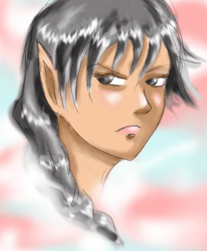

- Race : Elfe argenté
- Yeux / Cheveux : argentés
- Peau : claire
- Signe particulier : oreilles courtes pointant vers le haut
- Pays d’origine : Lanoï
- Magies de prédilection : eau, air
Elfe argenté
Le pays d’origine des elfes argentés est Lanoï, une terre fertile, bordée de mer et de forêts.
Peuple pacifique, on les surnomme aussi les elfes marins en raison de leurs nombreuses traditions liées à la mer. Les festivals des elfes argentés sont célèbres dans tout Crusimilia.
Autrefois, ils vivaient principalement de la pêche et des produits de la mer. Leurs magies favorites sont celles de l’eau et de l’air.